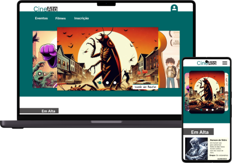

Meu papel:
Designer de Ux que lidera o design do site da CineAto.
Responsabilidades:
Condução de entrevistas, wireframes de papel e digitais, prototipagem de baixa e alta fidelidade, realização de estudos de usabilidade, consideração de acessibilidade e iteração de designs.
Outubro de 2023 a dezembro de 2023